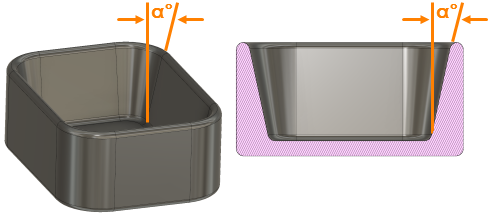

Gibt den Winkel oder den Betrag der Neigung für Wände, Kerne und andere Teile der Gusskavität an, um das einfache Auswerfen des Gussteils aus der Gussform zu ermöglichen. Der Verjüngungswinkel wird auch als Verjüngung bezeichnet.
Alle Druckgussflächen, die parallel zur Öffnungsrichtung der Form liegen, erfordern eine Verjüngung, damit das Gussteil ordnungsgemäß aus der Gussform ausgeworfen werden kann.
 |
Wenn die Legierung abkühlt und in Richtung der Elemente, also der inneren Komponentenoberflächen, schrumpft, liegt sie enger an der inneren Gussform an. Stellen Sie sicher, dass die Konstruktion der Gussform über eine ausreichend große Verjüngung verfügt, damit das Gussteil leichter entfernt werden kann.